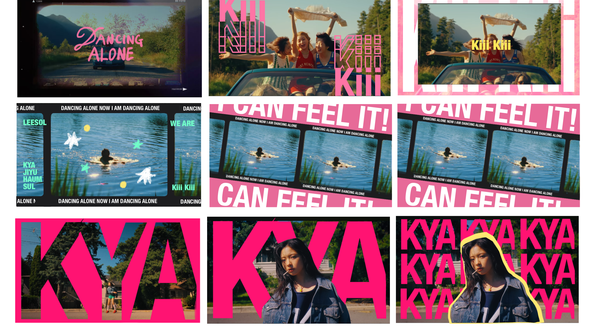

4주차 과제
중간고사 과제를 위한 스토리보드와 레이아웃 스케치를 완성했다. 구체적인 텍스트 모션과 화면 전환 트랜지션을 구상하는 것이 생각보다 어려웠다.
서울여자대학교 시각디자인전공 2학년의 미대 일상
중간고사 과제를 위한 스토리보드와 레이아웃 스케치를 완성했다. 구체적인 텍스트 모션과 화면 전환 트랜지션을 구상하는 것이 생각보다 어려웠다.
After Effects로 본격적인 모션 작업을 시작했다. 큰 틀을 잡고 구체적으로 수정해나가고자 했지만 세부적인 모션을 잡는 것이 더 재밌어서 디테일에 집착하다보니 진도 상황이 느려졌다. 하지만 점점 완성되는 영상을 보니 재미가 붙었다.